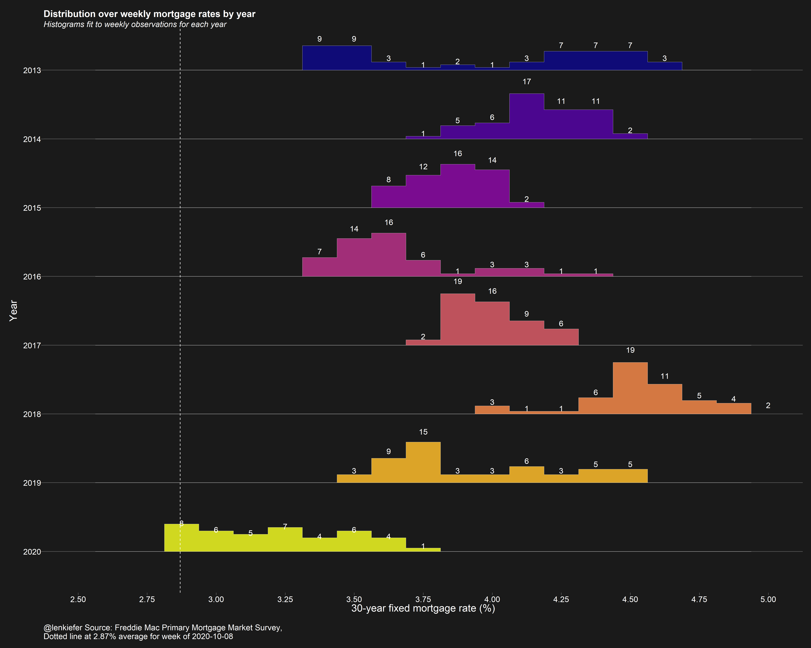

About a year ago I made a chart and Bob Rudis dubbed it a skyline chart. Here’s an updated version I made today.

The chart shows a historgram over US weekly average 30-year mortgage rates by year broken into 1/8 percentage points buckets. We see that through this past week, 30-year mortgage rates had spend eight weeks around 2.875 percent.
R code
The R script below will generate it (using my darklyplot package’s theme_dark2 function). The charts uses ggridges to generate the binlines/little histograms.
library(tidyverse)
library(ggridges)
library(darklyplot)
library(lubridate)
df <-
tidyquant::tq_get("MORTGAGE30US",get="economic.data") %>%
mutate(pmms30=price,year=year(date)) %>%
mutate(yearf=factor(year))
ggplot(data=filter(df,year>2009),
aes(y=forcats::fct_reorder(yearf,-year),
x=pmms30,group=forcats::fct_reorder(yearf,-year),
fill=yearf))+
geom_density_ridges2(color="white",size=0.2,
alpha=0.85,scale=0.75,
stat="binline",
binwidth=0.125)+
geom_text(stat = "bin",
aes(y = group + 0.9*(..count../max(..count..)),
label = ifelse(..count..>0, ..count.., "")
),
vjust = 0.2, size = 4, color = "white", binwidth = 0.125) +
geom_vline(data= .%>% filter(date==max(date)), linetype=2, color="white",aes(xintercept=pmms30))+
scale_fill_viridis_d(option="C")+
scale_color_viridis_d(option="C")+
scale_x_continuous(limits=c(2,6),breaks=seq(2,6,0.25))+
theme_dark2(base_family="Arial",base_size=12)+
theme(panel.grid.minor=element_blank(),
legend.position="none",
plot.title=element_text(size=rel(1.5),face="bold"),
plot.subtitle=element_text(size=rel(1.3),face="italic"),
panel.grid.major.x=element_blank())+
labs(x="30-year fixed mortgage rate (%)\n",
y="Year",
caption=paste0("@lenkiefer Source: Freddie Mac Primary Mortgage Market Survey,",
"\nDotted line at ",
df[df$date==max(df$date),]$pmms30,"% average for week of ",
as.character(max(df$date), format="%B %d, %Y")),
title="Distribution over weekly mortgage rates by year",
subtitle="Histograms fit to weekly observations for each year\n")